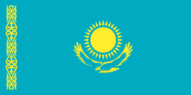

Malta 2013 – Gaia Cauchi
Malta 2013 – Gaia Cauchi"The start"
 Bielorussia 2016 – Alexander Minyonok
Bielorussia 2016 – Alexander Minyonok"Musyka Moih Pobeto"
 Ucraina 2009 – Andranik Aleksanyan
Ucraina 2009 – Andranik Aleksanyan"Try Topoli, Try surmy"
 Paesi Bassi 2023 – Sep & Jasmine
Paesi Bassi 2023 – Sep & Jasmine"Holding on to you"
Ucraina 2011 – Kristall"Europe"
 Kazakistan 2022 – David Charlin
"Jer-Ana (Mother Earth)"
 Danimarca 2005 – Nicolai
Danimarca 2005 – Nicolai"Shake shake shake"